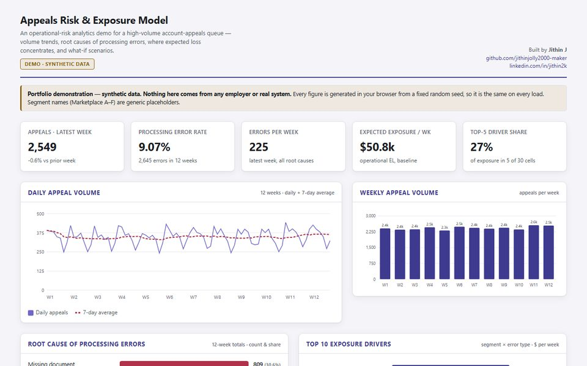

Case study · Risk and analytics
Appeals Risk & Exposure Model
A weekly error count tells you how often things go wrong. This shows where it costs the most, and what would fix it.

The problem
A high-volume appeals queue makes processing errors every week. Some are cheap to fix and some are expensive, and the expensive ones cluster in places a single error rate hides.
The question an operations lead actually needs answered is: where is our exposure concentrated, and which fix would reduce it most?
The approach
I broke the queue into 30 drivers, each a pairing of a segment and an error type, and estimated the expected cost of errors for each one every week.
Key decisions
- Call it what it is. It's a planning estimate of operational expected loss, not a banking risk measure, and the methodology section says so plainly so nobody over-reads it.
- Rank with a Pareto cut. Drivers making up the first 50% of exposure are high priority and the next 30% medium, so attention goes where it moves the total most.
- Let people test fixes. Sliders for error rate, volume and automation coverage recompute every figure live, so a lead can see the effect of a change before making it.
- Make it readable for everyone. Every heatmap cell shows its value as text, not only as colour.
What it shows
Where exposure concentrates by segment and error type, the ten drivers worth fixing first with a suggested mitigation for each, and how much exposure a change in automation coverage would remove.
What I'd add next
Ranges instead of single numbers, so uncertainty is visible, and an alert when a driver's exposure jumps week on week.
A portfolio demonstration with synthetic data. Nothing here comes from any employer or real system.